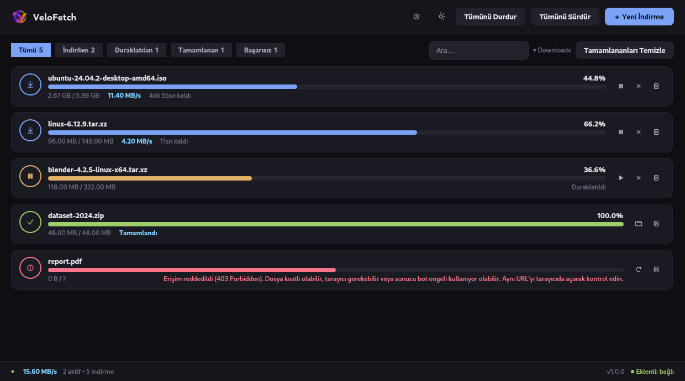
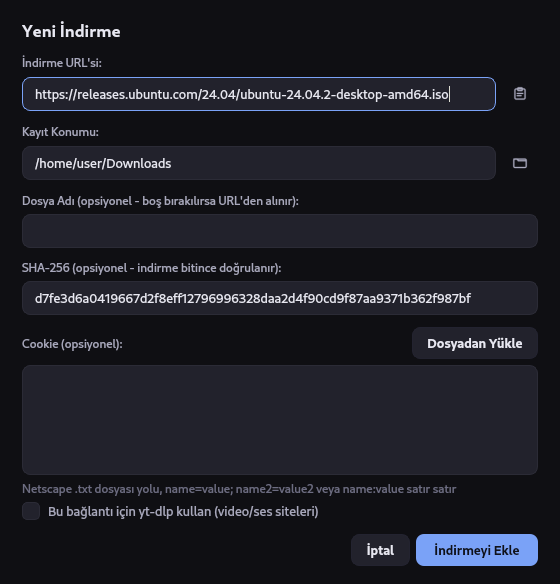
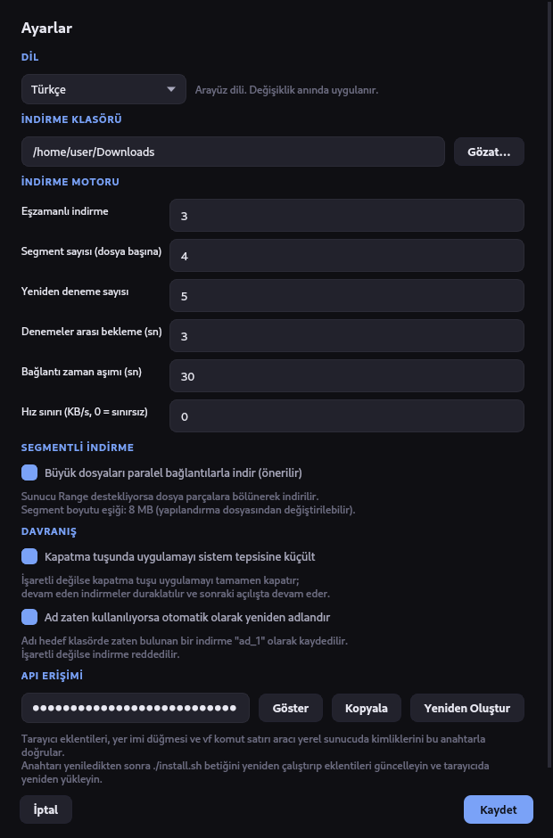
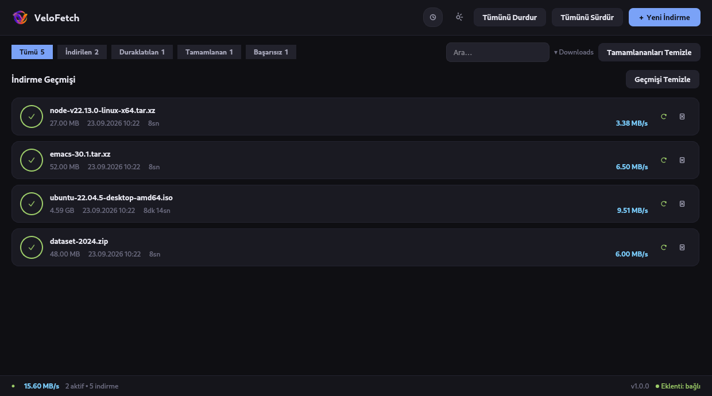

İndirmeler yarım kalmaz.
Linux için hızlı ve hafif bir indirme yöneticisi — paralel segmentli indirme, bilgisayarı yeniden başlatsanız bile kaldığı yerden devam, tarayıcınızdan doğrudan devralınan bağlantılar.
git clone https://github.com/tkinali/VeloFetch.git && cd VeloFetch && ./install.sh

Ne yapar
Bu bir masaüstü uygulaması, web paneline bakılan bir arka plan servisi değil: Qt 6 penceresi, tepsi simgesi ve çalışan uygulamaya bağlanan bir komut satırı aracı. Electron yok, arka planda servis yok, dışarıya veri gitmiyor.
Segmentli indirme
HTTP Range destekleyen sunucularda 8 MB'tan büyük dosyalar paralel bağlantılara bölünür —
varsayılan olarak dört bağlantı. VeloFetch önce gerçek bir 206 denemesi yapar;
sunucu buna uymazsa tek bağlantıya düşer.
Baştan değil, kaldığı yerden
Duraklatma HTTP Range üzerinden çalışır; sürdürdüğünüzde indirme baştan başlamaz, kaldığı bayttan devam eder. İlerleme SQLite'a, segment konumları da ayrı bir dosyaya sürekli kaydedilir — uygulamayı kapatmanız, hatta makineyi yeniden başlatmanız indirmeyi kaybettirmez.
Mantıklı yeniden denemeler
Bağlantı koptuğunda istek, giderek artan bekleme süreleriyle yeniden denenir. Kalıcı
hatalarda — 401, 403, 410 — boşuna uğraşmaz, durumu
doğrudan size bildirir.
Tarayıcı entegrasyonu
Chrome, Chromium, Brave, Vivaldi ve Firefox'ta sağ tık → VeloFetch ile İndir. Sayfanın cookie'leri de aktarıldığından, oturum açmanızı gerektiren dosyalar da sorunsuz indirilir. Diğer tarayıcılar için hiçbir kurulum istemeyen yer imi çözümü var.
Doğrulama ve sınırlar
İndirmeyi eklerken beklenen SHA-256 özetini yapıştırın; sonuç kartın üzerinde görünür. Bant genişliğine başka yerde ihtiyacınız olduğunda KB/s sınırı koyabilirsiniz — bu sınır her indirme için ayrı ayrı uygulanır.
Masaüstü için tasarlandı
Koyu Qt 6 arayüzü; durum filtreleri, arama ve her kartın kendi sağ tık menüsü. Pencereyi kapattığınızda sistem tepsisi indirmeleri sürdürür, bir indirme bittiğinde masaüstü bildirimi alırsınız. Arayüz Türkçe ve İngilizce; sistem dilinize göre otomatik seçilir.
Uygulamaya bir bakış
Her görsel, güncel sürümdeki gerçek bir oturumdan alındı.



Kurulum
Herhangi bir Linux dağıtımında Python 3.10 veya üzeri yeterli. Qt bir pip bağımlılığı olarak geldiğinden ayrıca sistem Qt paketi kurmanız gerekmez.
Otomatik
Sanal ortamı oluşturur, uygulamayı kurar, vf başlatıcısını ve uygulama menüsü girdisini ekler, API anahtarınızı üretir, tarayıcı eklentilerini yüklemeye hazır hale getirir.
git clone https://github.com/tkinali/VeloFetch.git
cd VeloFetch
./install.shpip ile
vf ve velofetch komutlarını PATH'e ekler. Video siteleri için media ekiyle kurun.
pip install .
# yt-dlp dahil:
pip install ".[media]"Kaynaktan
Hiç kurmadan, doğrudan klonladığınız dizinden çalıştırın.
pip install -r requirements.txt
python -m vfTerminalden
Komut satırı aracı, çalışan uygulamayla yerel API üzerinden haberleşir.
| Komut | Yaptığı iş |
|---|---|
vf | Uygulamayı başlatır, zaten açıksa penceresini öne getirir |
vf add <url> | İndirmeyi kuyruğa ekler — -f dosya adı, -c cookie |
vf list | Tüm indirmeleri durumu ve ilerlemesiyle listeler |
vf ping | Uygulamanın çalışıp çalışmadığını söyler |
vf integration | Tarayıcı entegrasyonu adresini, anahtarınız gömülü olarak yazdırır |
Tarayıcı entegrasyonu
VeloFetch 127.0.0.1:9876 adresini dinler. Her istek API anahtarınızı taşımak
zorundadır; böylece rastgele bir web sayfası arkanızdan kuyruğa indirme ekleyemez.
Yer imi — kurulum istemez
vf integration komutunu çalıştırın, yazdırdığı adresi açın ve butonu yer imi
çubuğunuza sürükleyin. Herhangi bir sayfada bu yer imine tıkladığınızda o sayfanın URL'sini
ve cookie'lerini VeloFetch'e gönderir. Her tarayıcıda çalışır.
Yer imi yalnızca document.cookie ile görünen cookie'leri okuyabilir; oturum
cookie'leri genellikle HttpOnly olduğundan aktarılmaz. Onlar için eklentiyi
veya bir cookies.txt dosyasını kullanın.
Eklenti — sağ tık menüsü
./install.sh, anahtarınız yazılmış ve yüklenmeye hazır kopyalar bırakır.
Eklentiyi depodan değil ~/.local/share/velofetch/browser/ dizininden yükleyin;
depodaki kopya bilerek anahtarsız bırakıldığı için sunucu onu reddeder.
Chromium: chrome://extensions → Geliştirici modu → Paketlenmemiş öğe yükle.
Firefox: about:debugging → Geçici Eklenti Yükle.
/ping
ve anahtar taşıyamayan CORS ön kontrol isteği. Loopback dışındaki Host başlıkları
DNS rebinding saldırısını engellemek için reddedilir,
Access-Control-Allow-Origin hiçbir zaman * olmaz. Anahtar ilk
çalıştırmada üretilir ve 0600 izinleriyle saklanır.